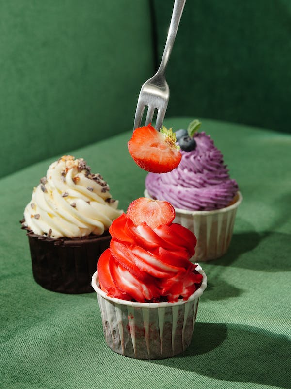
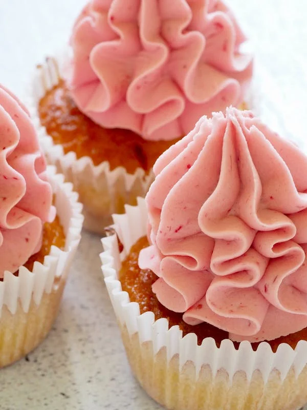
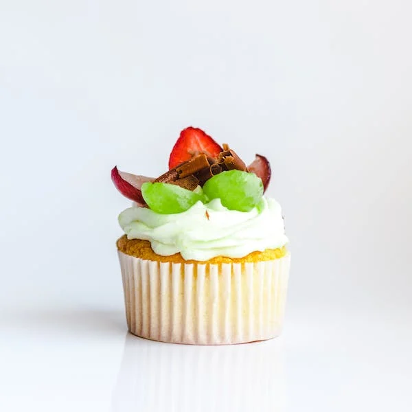

Cupcakes
Let's be fair and assess the pros and cons of cupcakes.
  | Pros | Cons |
|---|---|
| - Portion Control: Cupcakes offer built-in portion control, making it easier for individuals to manage their servings and avoid overindulgence.. | - Portion Size: While portion control can be a pro, it can also be a con for those who prefer larger servings. Some people may find cupcakes too small and unsatisfying. |
| - Variety: Cupcakes come in a wide variety of flavors, allowing for creative and diverse options to suit different tastes and preferences. | - Tendency to Dry Out: Due to their smaller size, cupcakes can sometimes dry out faster than larger cakes if not stored properly. |
| - Convenience: Cupcakes are convenient for both serving and eating. They are easy to distribute at events and gatherings without the need for cutting and plating. | - Caloric Density: Despite their small size, cupcakes can be calorie-dense, especially when topped with rich frosting and additional decorations. This can be a concern for those watching their calorie intake. |